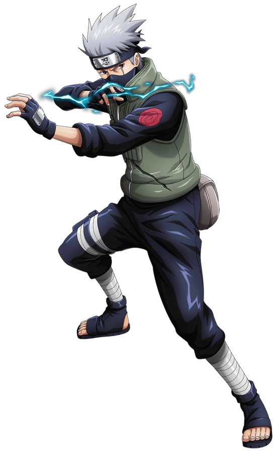

Naruto Uzumaki (Japanese: うずまき ナルト, Hepburn: Uzumaki Naruto)
(/ˈnɑːrutoʊ/) is the titular protagonist of the manga Naruto, created by
Masashi Kishimoto. He is a ninja from the fictional Hidden Leaf Village
(Japanese: 木ノ葉隠れ, Hepburn: konohagakure). As a boy, Naruto is
ridiculed and ostracized on account of the Nine-Tailed Demon Fox—a
malevolent creature that attacked Konohagakure—that was sealed away in
his body. Despite this, he aspires to become his village's leader, the
Hokage, in order to receive their approval. His carefree, optimistic,
and boisterous personality enables him to befriend other Konohagakure
ninja, as well as ninja from other villages. Naruto appears in the
series' films and in other media related to the franchise, including
video games and original video animations (OVA), as well as the sequel
Boruto: Naruto Next Generations, where he is the Hokage, and his son,
Boruto Uzumaki, is the protagonist. When creating Naruto for the initial
part of the series, Kishimoto kept the character "simple and stupid",
while giving him many attributes of an ideal hero. Kishimoto gave Naruto
a dark side by adding tragedy to the character's past. He has revised
Naruto's image many times, providing the character with simple clothes
to fit the young demography. Kishimoto changed his design for Part II of
the storyline, which starts two-and-a-half years after Part I. Naruto is
voiced by Junko Takeuchi in the original animated series and Maile
Flanagan in the English adaptations. Merchandise based on Naruto
includes figurines and keychains. Naruto's character development has
been praised by anime and manga publications and has drawn scholarly
attention. Although some initially saw him as a typical manga and anime
protagonist comparable to those in other shōnen manga, others have
praised his personality and character development as he avoids
stereotypes typically seen in similar media. The character has also been
the subject of researches in literature, making him stand out in fiction
based on his traits and growth. Merchandise based on Naruto includes
figurines and keychains. Naruto's character development has been praised
by anime and manga publications and has drawn scholarly attention.
Although some initially saw him as a typical manga and anime protagonist
comparable to those in other shōnen manga, others have praised his
personality and character development as he avoids stereotypes typically
seen in similar media. The character has also been the subject of
researches in literature, making him stand out in fiction based on his
traits and growth.
Sasuke Uchiha
Sasuke Uchiha (Japanese: うちは サスケ, Hepburn: Uchiha Sasuke) (/ˈsɑːskeɪ/) is a fictional character in the Naruto manga and anime franchise created by Masashi Kishimoto. Sasuke belongs to the Uchiha clan, a notorious ninja family, and one of the most powerful, allied with Konohagakure (木ノ葉隠れの里, English version: "Hidden Leaf Village"). Most of its members were massacred by Sasuke's older brother, Itachi Uchiha, before the series began, leaving Sasuke as one of the few survivors. Despite becoming empathetic toward his teammates Naruto Uzumaki and Sakura Haruno, Sasuke's feelings of powerlessness force him to abandon his friends and his home in his quest to become stronger, and to find Orochimaru. Sasuke appears in several of the series' animated feature films and related media, including video games, original video animations (OVAs), and Boruto: Naruto the Movie (2015) and its manga sequel, Boruto: Naruto Next Generations (2016), in which he is depicted as a vigilante supporting his village and a mentor to Naruto's son Boruto Uzumaki.
Kishimoto conceived Sasuke as a rival of the series' title character Naruto Uzumaki. Despite Sasuke's dark character development later in the story, Kishimoto avoided portraying him as a villain; he found designing the character challenging and had difficulty creating a suitable look for him. Nonetheless, Kishimoto has grown to enjoy drawing him. In the manga's animated adaptations, Sasuke was voiced by Noriaki Sugiyama in Japanese and Yuri Lowenthal in English.
Sasuke's character has received mixed responses from anime and manga publications. His impressive fighting skills, plot contribution, and rivalry with Naruto Uzumaki received some praise, but he was criticized as a stereotypical rival in the mold of similar characters from other shōnen manga and as exhibiting a cold personality. Nevertheless, Sasuke's characterization in latter parts of the story and more mature personality in the Boruto sequel earned further positive comments. Sasuke has also placed highly in Naruto reader popularity polls and has also been the subject of studies by scholars. Character-based merchandise, including action figures and key chains, have been released.
Manga artist Masashi Kishimoto did not include Sasuke Uchiha in his original concept for the Naruto series, a story revolving around the character Naruto Uzumaki. Discussing the series' future, his editor, Kosuke Yahagi, advised him to add a rival character for the protagonist Naruto and he created Sasuke.[1] The character's first name came from Sanpei Shirato's manga Sasuke and Sarutobi Sasuke, a fictional ninja character in Japanese children's stories.[2] To introduce Sasuke, Kishimoto wrote a chapter that was set before the formation of his ninja squad, Team 7. The idea was scrapped; Yahagi told Kishimoto to focus the series' first two chapters on introducing Naruto instead and the focus on Sasuke and the rest of the supporting characters were shown in the next chapters for the first time.[3][4] Once creating Sasuke's character, Kishimoto decided to use him as a protagonist rather than supporting character in order to start his development at the same time as Naruto.[5] When plot developments made Sasuke one of the story's antagonists, Kishimoto called him and Naruto yin and yang because of their differences and complementary natures.[6] During this period, he was asked whether Sasuke was good or evil; he replied that Sasuke was neither and called him a "very pure person."[7] He said although some of Sasuke's actions such as following his clan's ideas were positive, his self-centeredness tended to cause problems with others. Since the beginning of the story's serialization, Kishimoto planned to conclude the series with a fight between Sasuke and Naruto, but he was uncertain whether the characters would end up as friends or enemies.
Kakashi Hatake

Kakashi Hatake (Japanese: はたけ カカシ, Hepburn: Hatake Kakashi) is a fictional character and one of the main protagonists in the Naruto manga and anime series created by Masashi Kishimoto. In the story, Kakashi is the teacher of Team 7, consisting of the series' primary characters, Naruto Uzumaki, Sasuke Uchiha, and Sakura Haruno. Kakashi's past has been extensively explored in the series, resulting in a gaiden being devoted to his past experiences. Kakashi has appeared in several pieces of Naruto media, the featured films in the series, the original video animations, and the video games.
Kakashi is depicted in Naruto as an eccentric but highly skilled shinobi for the Hidden Leaf Village. Initially cold and calculated due to the suicide of his father, Sakumo, Kakashi eventually began to warm up in his youth with the help of his teammate Obito Uchiha, while they are under the tutelage of Naruto's father Minato Namikaze. It is through Obito that Kakashi obtains the Uchiha clan's Sharingan (which originally only contained 1 tomoe), which he uses to copy the abilities of his opponents and make his own, but also drains his energy. Following the deaths of all of his squadmates, unaware of Obito's survival, Kakashi is eventually given charge of Team 7 due to his connections with Minato and the Uchiha, and through them is able to finally have the family he never had. He is initially portrayed as a detached and apathetic figure, but as the series progresses, his loyalty to his friends, students, and the village becomes increasingly apparent.
Kakashi was originally created by Kishimoto to be a harsh teacher but the author decided to avoid that. Instead, he made him more generous to calm his students in difficult situations to the point of giving him feminine traits. Kakashi's design gave Kishimoto difficulties as a result of having most of his face covered and as a result it was difficult to show his emotions. For the anime series, he is voiced by Kazuhiko Inoue in Japanese and Dave Wittenberg in the English dub.
Numerous anime and manga publications have praised and criticized Kakashi's character. Although he has been noted to be an echo of similar detached shōnen manga characters, the duality of Kakashi's apathetic and serious sides have been praised. Kakashi has been highly popular with the Naruto reader base, placing high in several popularity polls. Merchandise based on Kakashi has also been released, including key chains and plush dolls.